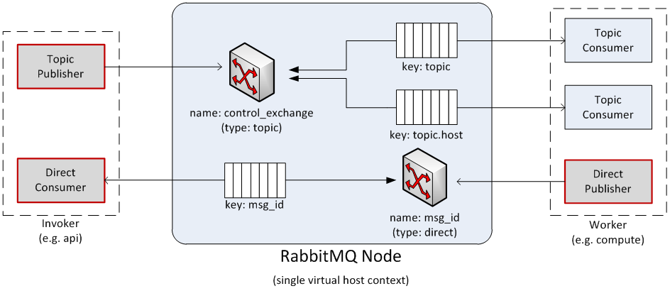

AMQP and manila¶
AMQP is the messaging technology chosen by the OpenStack cloud. The AMQP broker, either RabbitMQ or Qpid, sits between any two manila components and allows them to communicate in a loosely coupled fashion. More precisely, manila components (the compute fabric of OpenStack) use Remote Procedure Calls (RPC hereinafter) to communicate to one another; however such a paradigm is built atop the publish/subscribe paradigm so that the following benefits can be achieved:
- Decoupling between client and servant (such as the client does not need to know where the servant’s reference is).
- Full a-synchronism between client and servant (such as the client does not need the servant to run at the same time of the remote call).
- Random balancing of remote calls (such as if more servants are up and running, one-way calls are transparently dispatched to the first available servant).
Manila uses direct, fanout, and topic-based exchanges. The architecture looks like the one depicted in the figure below:

Manila implements RPC (both request+response, and one-way, respectively nicknamed ‘rpc.call’ and ‘rpc.cast’) over AMQP by providing an adapter class which take cares of marshaling and unmarshaling of messages into function calls. Each manila service (for example Compute, Volume, etc.) create two queues at the initialization time, one which accepts messages with routing keys ‘NODE-TYPE.NODE-ID’ (for example compute.hostname) and another, which accepts messages with routing keys as generic ‘NODE-TYPE’ (for example compute). The former is used specifically when Manila-API needs to redirect commands to a specific node like ‘euca-terminate instance’. In this case, only the compute node whose host’s hypervisor is running the virtual machine can kill the instance. The API acts as a consumer when RPC calls are request/response, otherwise is acts as publisher only.
Manila RPC Mappings¶
The figure below shows the internals of a message broker node (referred to as a RabbitMQ node in the diagrams) when a single instance is deployed and shared in an OpenStack cloud. Every manila component connects to the message broker and, depending on its personality (for example a compute node or a network node), may use the queue either as an Invoker (such as API or Scheduler) or a Worker (such as Compute, Volume or Network). Invokers and Workers do not actually exist in the manila object model, but we are going to use them as an abstraction for sake of clarity. An Invoker is a component that sends messages in the queuing system via two operations: 1) rpc.call and ii) rpc.cast; a Worker is a component that receives messages from the queuing system and reply accordingly to rcp.call operations.
Figure 2 shows the following internal elements:

- Topic Publisher: A Topic Publisher comes to life when an rpc.call or an rpc.cast operation is executed; this object is instantiated and used to push a message to the queuing system. Every publisher connects always to the same topic-based exchange; its life-cycle is limited to the message delivery.
- Direct Consumer: A Direct Consumer comes to life if (an only if) a rpc.call operation is executed; this object is instantiated and used to receive a response message from the queuing system; Every consumer connects to a unique direct-based exchange via a unique exclusive queue; its life-cycle is limited to the message delivery; the exchange and queue identifiers are determined by a UUID generator, and are marshaled in the message sent by the Topic Publisher (only rpc.call operations).
- Topic Consumer: A Topic Consumer comes to life as soon as a Worker is instantiated and exists throughout its life-cycle; this object is used to receive messages from the queue and it invokes the appropriate action as defined by the Worker role. A Topic Consumer connects to the same topic-based exchange either via a shared queue or via a unique exclusive queue. Every Worker has two topic consumers, one that is addressed only during rpc.cast operations (and it connects to a shared queue whose exchange key is ‘topic’) and the other that is addressed only during rpc.call operations (and it connects to a unique queue whose exchange key is ‘topic.host’).
- Direct Publisher: A Direct Publisher comes to life only during rpc.call operations and it is instantiated to return the message required by the request/response operation. The object connects to a direct-based exchange whose identity is dictated by the incoming message.
- Topic Exchange: The Exchange is a routing table that exists in the context of a virtual host (the multi-tenancy mechanism provided by Qpid or RabbitMQ); its type (such as topic vs. direct) determines the routing policy; a message broker node will have only one topic-based exchange for every topic in manila.
- Direct Exchange: This is a routing table that is created during rpc.call operations; there are many instances of this kind of exchange throughout the life-cycle of a message broker node, one for each rpc.call invoked.
- Queue Element: A Queue is a message bucket. Messages are kept in the queue until a Consumer (either Topic or Direct Consumer) connects to the queue and fetch it. Queues can be shared or can be exclusive. Queues whose routing key is ‘topic’ are shared amongst Workers of the same personality.
{kind=link}
RPC Calls¶
The diagram below shows the message flow during an rpc.call operation:
- A Topic Publisher is instantiated to send the message request to the queuing system; immediately before the publishing operation, a Direct Consumer is instantiated to wait for the response message.
- Once the message is dispatched by the exchange, it is fetched by the Topic Consumer dictated by the routing key (such as ‘topic.host’) and passed to the Worker in charge of the task.
- Once the task is completed, a Direct Publisher is allocated to send the response message to the queuing system.
- Once the message is dispatched by the exchange, it is fetched by the Direct Consumer dictated by the routing key (such as ‘msg_id’) and passed to the Invoker.
{kind=link}
RPC Casts¶
The diagram below the message flow during an rp.cast operation:
- A Topic Publisher is instantiated to send the message request to the queuing system.
- Once the message is dispatched by the exchange, it is fetched by the Topic Consumer dictated by the routing key (such as ‘topic’) and passed to the Worker in charge of the task.

AMQP Broker Load¶
At any given time the load of a message broker node running either Qpid or RabbitMQ is function of the following parameters:
- Throughput of API calls: The number of API calls (more precisely rpc.call ops) being served by the OpenStack cloud dictates the number of direct-based exchanges, related queues and direct consumers connected to them.
- Number of Workers: There is one queue shared amongst workers with the same personality; however there are as many exclusive queues as the number of workers; the number of workers dictates also the number of routing keys within the topic-based exchange, which is shared amongst all workers.
The figure below shows the status of a RabbitMQ node after manila components’ bootstrap in a test environment. Exchanges and queues being created by manila components are:
- Exchanges
- manila (topic exchange)
- Queues
- compute.phantom (phantom is hostname)
- compute
- network.phantom (phantom is hostname)
- network
- share.phantom (phantom is hostname)
- share
- scheduler.phantom (phantom is hostname)
- scheduler

RabbitMQ Gotchas¶
Manila uses Kombu to connect to the RabbitMQ environment. Kombu is a Python library that in turn uses AMQPLib, a library that implements the standard AMQP 0.8 at the time of writing. When using Kombu, Invokers and Workers need the following parameters in order to instantiate a Connection object that connects to the RabbitMQ server (please note that most of the following material can be also found in the Kombu documentation; it has been summarized and revised here for sake of clarity):
- Hostname: The hostname to the AMQP server.
- Userid: A valid username used to authenticate to the server.
- Password: The password used to authenticate to the server.
- Virtual_host: The name of the virtual host to work with. This virtual host must exist on the server, and the user must have access to it. Default is “/”.
- Port: The port of the AMQP server. Default is 5672 (amqp).
The following parameters are default:
- Insist: Insist on connecting to a server. In a configuration with multiple load-sharing servers, the Insist option tells the server that the client is insisting on a connection to the specified server. Default is False.
- Connect_timeout: The timeout in seconds before the client gives up connecting to the server. The default is no timeout.
- SSL: use SSL to connect to the server. The default is False.
More precisely Consumers need the following parameters:
Connection: The above mentioned Connection object.
Queue: Name of the queue.
Exchange: Name of the exchange the queue binds to.
Routing_key: The interpretation of the routing key depends on the value of the exchange_type attribute.
- Direct exchange: If the routing key property of the message and the routing_key attribute of the queue are identical, then the message is forwarded to the queue.
- Fanout exchange: messages are forwarded to the queues bound the exchange, even if the binding does not have a key.
- Topic exchange: If the routing key property of the message matches the routing key of the key according to a primitive pattern matching scheme, then the message is forwarded to the queue. The message routing key then consists of words separated by dots (”.”, like domain names), and two special characters are available; star (“”) and hash (“#”). The star matches any word, and the hash matches zero or more words. For example ”.stock.#” matches the routing keys “usd.stock” and “eur.stock.db” but not “stock.nasdaq”.
Durable: This flag determines the durability of both exchanges and queues; durable exchanges and queues remain active when a RabbitMQ server restarts. Non-durable exchanges/queues (transient exchanges/queues) are purged when a server restarts. It is worth noting that AMQP specifies that durable queues cannot bind to transient exchanges. Default is True.
Auto_delete: If set, the exchange is deleted when all queues have finished using it. Default is False.
Exclusive: exclusive queues (such as non-shared) may only be consumed from by the current connection. When exclusive is on, this also implies auto_delete. Default is False.
Exchange_type: AMQP defines several default exchange types (routing algorithms) that covers most of the common messaging use cases.
Auto_ack: acknowledgment is handled automatically once messages are received. By default auto_ack is set to False, and the receiver is required to manually handle acknowledgment.
No_ack: It disable acknowledgment on the server-side. This is different from auto_ack in that acknowledgment is turned off altogether. This functionality increases performance but at the cost of reliability. Messages can get lost if a client dies before it can deliver them to the application.
Auto_declare: If this is True and the exchange name is set, the exchange will be automatically declared at instantiation. Auto declare is on by default. Publishers specify most the parameters of Consumers (such as they do not specify a queue name), but they can also specify the following:
Delivery_mode: The default delivery mode used for messages. The value is an integer. The following delivery modes are supported by RabbitMQ:
- 1 or “transient”: The message is transient. Which means it is stored in memory only, and is lost if the server dies or restarts.
- 2 or “persistent”: The message is persistent. Which means the message is stored both in-memory, and on disk, and therefore preserved if the server dies or restarts.
The default value is 2 (persistent). During a send operation, Publishers can override the delivery mode of messages so that, for example, transient messages can be sent over a durable queue.

Except where otherwise noted, this document is licensed under Creative Commons Attribution 3.0 License. See all OpenStack Legal Documents.